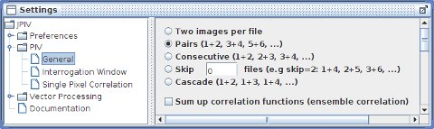

home
download
introduction
guide
how to ...
documentation
scripting
forum
javadoc
imprint

settings-panel: PIV - General.
Two images per file
Select this option if your image files contain two frames. A two frame image is basically one image, where the upper half represents the first exposure and the lower half represents the second exposure of a PIV measurement.
Pairs (1+2, 3+4, 5+6)
Use this option when you want to correlate consecutive pairs of images.
Consecutive (1+2, 2+3, 3+4)
Use this option when you want to correlate the images of a time series with each other. Image one will be correlated with image two, image two with image three and so forth.
Skip
For small particle displacements between successive exposures, it might enhance the accuracy of your evaluation, when images with a larger time inbetween are correlated with each other. If 0 is entered into the text field, this will be the same as the Consecutive option, when 1 is entered the first image will be correlated with the third one, the second one with the fourth one and so forth.
Cascade
Usful for finding the right number of files to skip.
Sum up correlation functions (ensemble correlation)
If this option is not selected, each image pair (or double frame image) will result in one output file. If you have a series of files with constant flow, you might enhance the result by selecting this option. Prior to the peak serching, all correlation functions are added up then. In this way, noise will be suppressed efficiently. You will get one output file for the selected range of images. The difference to averaging vector fields is, that single outliers are not effecting the final result, because thir peak is suppressed due to the summing of the correlation functions.